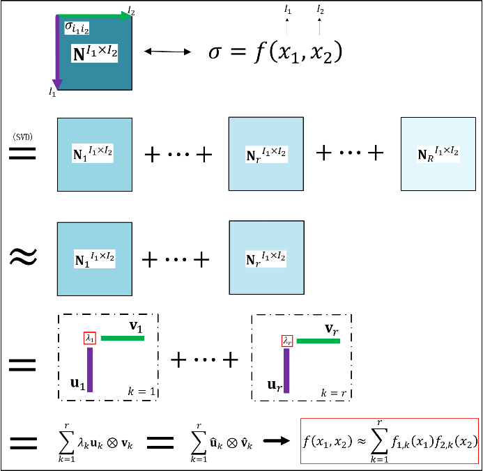
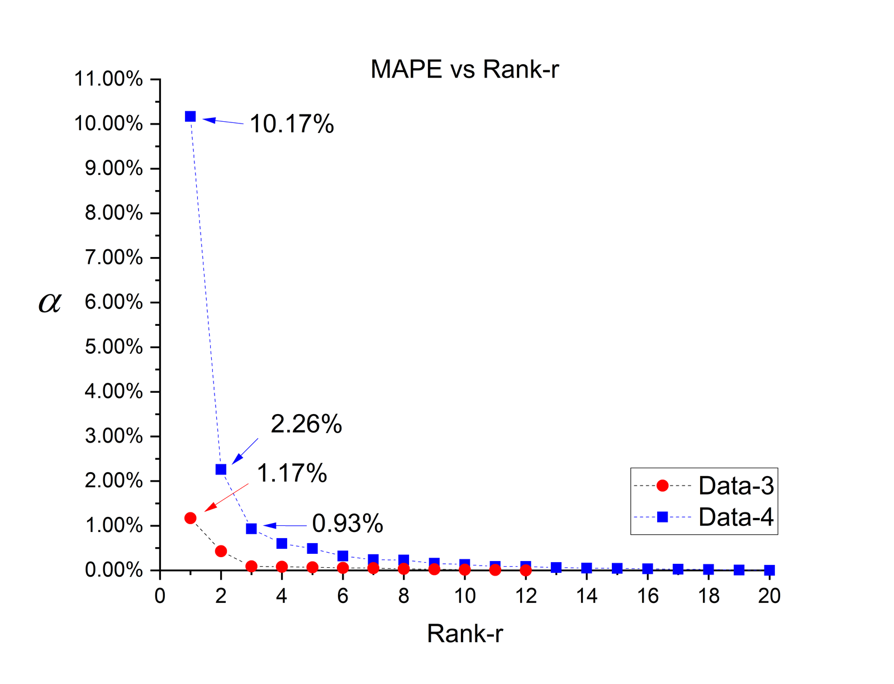

The Johnson-Cook (J-C) equation has been cited more than 30,000 times, and the Cowper-Symonds (C-S) equation more than 5,600. Both belong to the same family: they write flow stress as a product of separate functions, one for strain, one for strain-rate, one for temperature, so that each effect can be measured independently and multiplied together. Paper 1 asks a question that, remarkably, nobody had answered rigorously in the decades either equation had been in use: is that multiplicative, decoupled structure actually a legitimate description of real flow stress data, or just a convenient assumption that happens to work well enough, some of the time? The paper answers by recasting “decoupled” as a precise mathematical statement, a rank-1 low-rank approximation, and then testing it against real 2D and 3D flow stress datasets. This guide restates that argument and its evidence without requiring the original paper open.
Keywords: decoupled flow stress equation; Johnson-Cook equation; singular value decomposition (SVD); CP decomposition; rank-1 approximation; MAPE; legitimacy criterion
1. The question this paper asks
A dynamic flow stress depends, in general, on a whole set of variables at once, strain, strain-rate, temperature and more. Written out fully, that is a single multivariable function with no assumed internal structure. Almost every widely used empirical equation, however, does not use that general form. J-C, C-S, and their many variants all assume the effect of each variable can be pulled apart and multiplied: a strain-hardening term, times a strain-rate term, times a temperature-softening term. This factorised form is attractive for a concrete practical reason: each term can then be calibrated from a separate, simple test, a quasi-static tension test at room temperature for the strain term, a range of strain-rates at fixed temperature for the rate term, and so on, rather than needing one enormous combined test matrix.
That practical convenience is not the same thing as mathematical legitimacy. Paper 1 points out that the decoupled form has been accepted mainly because it has been used successfully in numerical simulations, not because anyone checked, for a given material's actual data, whether decoupling is a reasonable simplification or an outright distortion. Meanwhile, isolated evidence already existed that J-C performs poorly for some materials, which had prompted various coupled variants, equations that mix the variables back together, usually fitted ad hoc to whatever dataset was on hand, with no generic rule for when coupling is needed or how much of it. The paper's goal is to replace all of this trial and error with a single, quantitative test: given a material's measured flow stress data, is the decoupled form legitimate for it, yes or no, and by how much does it fall short if not.
2. What “decoupled” means, mathematically
Start by assembling the raw experimental data itself, without assuming any functional form. For two variables, say strain \(\varepsilon\) and strain-rate \(\dot\varepsilon\), every stress-strain curve measured at a given rate becomes one row (or column) of a two-dimensional table, a flow stress data (FSD) matrix \(N\), whose entry \(N_{ij}\) is the measured stress at the \(i\)th strain value and \(j\)th strain-rate. For three variables (adding temperature), the data instead fill a three-dimensional array. No decoupling assumption has been made yet: \(N\) is simply the experiment, reorganised.
A decoupled equation is a very specific claim about the structure of \(N\): that it can be written as one function of \(\varepsilon\) alone, multiplied by one function of \(\dot\varepsilon\) alone (and, in 3D, one function of \(T\) alone):
This is exactly the mathematical definition of a rank-1 matrix: a matrix that can be written as the outer product of two vectors, one running down the strain axis, one across the strain-rate axis. J-C, C-S and every other member of that family are, whether or not anyone had previously stated it this way, all rank-1 (or, in three variables, rank-one-tensor) models of the flow stress array. That reframing is the paper's central move: it turns a modelling philosophy debate (should effects be coupled or decoupled?) into an ordinary linear-algebra question (is this data array well approximated by a rank-1 array?), which has an exact, computable answer.
3. Turning an assumption into a number
Real experimental data is essentially never exactly rank-1, so the real question is one of degree: how good is the best possible rank-1 approximation, and is it good enough. For the 2D case, the tool is the singular value decomposition (SVD), which, by the Eckart-Young theorem, gives the best possible approximation of \(N\) at every rank \(r\):
where each rank-1 term \(\sigma_k\,\mathbf{u}_k\otimes\mathbf{v}_k\) is exactly the decoupled form of Eq. (1), and the singular values \(\sigma_k\) are ranked so the first term carries the most weight. For three variables, the analogous tool is CANDECOMP/PARAFAC (CP) decomposition, which extends the same idea, a sum of rank-1 three-way terms, to a 3D array. Fig. 2 shows the procedure for the 2D case: the full matrix \(N\) is decomposed into weighted outer products, and the flow stress can equivalently be written as a sum of \(r\) factorised sub-functions.

The quality of a rank-\(r\) approximation is measured with the mean absolute percentage error (MAPE) between the approximation and the real data:
This gives the paper's legitimacy criterion in one line: pick an acceptable error \(\varepsilon_c\) for the intended use; if the rank-1 approximation already satisfies \(\varepsilon_1 \le \varepsilon_c\), a decoupled, J-C-type equation is a legitimate description of that material's data. If it does not, the data has genuine coupling between variables, and a decoupled equation should not be used, more terms (rank-2, rank-3, …) or a coupled model are needed instead. Crucially, this is not a judgement call made by eye; it is read directly off a computed error curve.
4. Four datasets, two different answers
The paper tests the criterion on four real datasets, two in 2D (strain and strain-rate only) and two in 3D (strain, strain-rate and temperature), chosen specifically because they come out on opposite sides of the criterion:
- Data-1 (titanium IMI 834, 2D): Rank-1 MAPE \(\varepsilon_1=0.12\%\). Increasing the rank barely improves this. The strain-rate effect has almost no dependence on strain, decoupling is essentially exact.
- Data-2 (OFHC copper, 2D): Rank-1 MAPE \(\varepsilon_1=1.98\%\), which drops sharply to a good fit only at Rank-2. Below 10 s-1, the stress-strain curves do not scale together, i.e. strain-rate hardening is genuinely coupled with strain for this material.
- Data-3 (titanium IMI 834, 3D: strain, strain-rate, temperature): Rank-1 MAPE \(\varepsilon_1=1.17\%\), comfortably under a 1.5% threshold. Decoupling is legitimate.
- Data-4 (Al-0.8Mg-0.76Si, 3D): Rank-1 MAPE \(\varepsilon_1=10.17\%\), far above the same threshold; the criterion is only satisfied at Rank-3 (\(\varepsilon_3=0.93\%\)). Thermal softening, strain-rate strengthening and strain hardening all interact here, especially the temperature effect, which stops varying monotonically once strain-rate and strain change, exactly the kind of behaviour a single multiplicative temperature term cannot capture.

The same conclusion shows up a second way: the leading (Rank-1) mode of the decomposition, for each variable separately, tracks the material's own averaged experimental curve closely for Data-1 and Data-3, but for Data-4 the leading temperature mode is monotonic while the real averaged temperature-softening behaviour is not, direct evidence that one multiplicative term cannot represent it. The result across all four datasets is the same message stated four different ways: whether decoupling is legitimate is a property of the material and the variable range, not a universal property of flow stress, and it has to be checked, not assumed.
5. A second, independent problem: how J-C is fitted
Even when the legitimacy criterion is satisfied and a decoupled equation is the right choice, the paper identifies a separate flaw in how J-C itself is conventionally calibrated. The standard J-C procedure fits each factorised term using only the initial yield point of each curve, e.g. the strain-rate parameter \(C\) is calibrated purely from the dynamic increase factor (DIF) at initial yield, rather than from the full stress-strain response. The paper instead fits parameters to the entire Rank-1 CP result across the whole strain range, and additionally tests replacing J-C's logarithmic strain-rate term with the Cowper-Symonds exponential form, a variant the paper calls MJC (modified J-C).
The comparison is stark for Data-3 and Data-4: the conventional J-C procedure produces the worst match to experimental data among all the flow stress representations tested (a MAPE of 46.67% for Data-4), because a logarithmic strain-rate term cannot reproduce the DIF trend the material actually shows, while an exponential (C-S-type) term can. MJC fitted the same way performs far better, confirming that at least part of J-C's known weaknesses comes not from decoupling itself but from a specific, replaceable choice of functional form and a fitting procedure that only looks at one point on each curve.
6. Why it matters
The practical payoff is a concrete decision rule rather than a modelling philosophy. Given a new material's flow stress data, this paper's criterion tells a modeller, before any equation is fitted, whether a simple decoupled equation can legitimately represent it, and if not, how many decomposition terms are actually needed to hit a target accuracy. When the criterion fails, the CP/SVD decomposition itself, rather than a hand-derived coupled equation, already provides a discrete, data-based flow stress representation with a known, controllable error, avoiding the ad hoc coupled models the introduction criticises for having no underpinning principle.
This is also the methodological seed for the rest of the constitutive-modeling stream: the same rank-1 legitimacy criterion, and the same SVD/CP machinery, is what Paper 2 and Paper 3 later combine with ANN-based reconstruction to build flow stress equations directly from qualified, irregularly-sampled SHPB data, first for strain and strain-rate, then adding temperature.
7. Takeaway
“Decoupled” flow stress equations like J-C and C-S are, in exact mathematical terms, rank-1 approximations of the flow stress data array. Whether that approximation is legitimate for a given material is not something to assume from an equation's popularity; it is something to compute, by checking whether the Rank-1 SVD or CP approximation's error falls under an acceptable threshold. Some materials (titanium in this study) satisfy that criterion almost exactly; others (OFHC copper, an Al-Mg-Si alloy) clearly do not and need more decomposition terms or a coupled model. Separately, even where decoupling is legitimate, the conventional J-C fitting procedure, calibrated from initial yield alone with a fixed logarithmic rate term, is shown to be an avoidable source of error in its own right.
References
- Huang, X., & Li, Q. M. (2023). The legitimacy of decoupled dynamic flow stress equations and their representation based on discrete experimental data. International Journal of Impact Engineering, 173, 104453. https://doi.org/10.1016/j.ijimpeng.2022.104453
- Huang, X., & Li, Q. M. (2025). Determination of dynamic flow stress equation based on discrete experimental data: Part 1 — Methodology and the dependence of dynamic flow stress on strain-rate. International Journal of Impact Engineering, 206, 105403. https://doi.org/10.1016/j.ijimpeng.2025.105403
- Huang, X., & Li, Q. M. (2025). Determination of dynamic flow stress equation based on discrete experimental data: Part 2 — Dynamic flow stress depending on strain, strain-rate and temperature. International Journal of Impact Engineering, 206, 105432. https://doi.org/10.1016/j.ijimpeng.2025.105432
For the full mathematics behind this guide, see the SVD note (existence, the Eckart-Young-Mirsky theorem, and this rank-1 legitimacy criterion) and the CP decomposition note (the ALS algorithm and rank choice for 3D arrays).